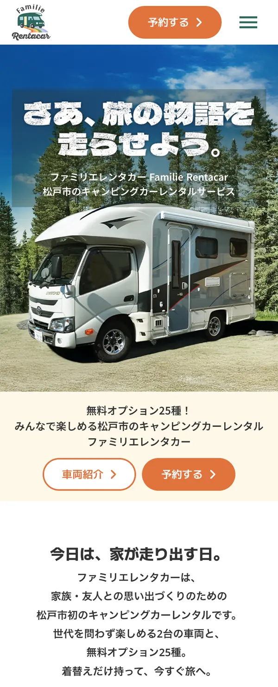

ロゴ制作からサイト設計・デザイン・実装まで、すべて一人で担当したプロジェクトです。
ブランドの立ち上げ段階から関わり、ビジュアル設計と情報設計の両軸から、一貫した世界観づくりを行いました。
一想定した課題
- キャンピングカーは準備が大変そう
- 荷物が多くなりそうでハードルが高い
- 家族利用で不安（使い方・設備など）
二デザインの意図
「ファミリーみんなでワクワクするキャンピングカー体験」と「無料レンタル25種以上で、着替えひとつで旅に出られる手軽さ」をコンセプトに設計しました。
家族での利用シーンを想起しやすいよう、楽しさや安心感が伝わるビジュアルトーンを意識し、直感的にサービスの魅力が伝わる構成としています。
また、「手軽さ」という強みが一目で理解できるよう、無料レンタルの内容やメリットを視覚的・情報的に整理し、ユーザーの不安や疑問を解消しながらスムーズに利用イメージへつなげる導線設計を行いました。
ワクワク感と利便性の両立を意識し、感情と機能の両面からサービス価値が伝わるデザインを目指しています。
三ロゴデザインの意図
ロゴは「ファミリーで楽しむワクワク感」と「旅へと広がる体験」を視覚的に表現することを目的に設計しました。
楽しい時間や高揚感を象徴するモチーフとして虹を採用し、親しみやすさとポジティブな印象を持たせています。虹は多様性やつながりも想起させるため、家族それぞれの時間を包み込む存在としても表現しました。
また、虹の形状やラインには、遠くへと続く道の広がりを重ねています。「日常から離れて旅に出る」「どこまでも行ける」という開放感や期待感を、形そのものに持たせました。
単なる装飾ではなく、ブランドのコンセプトである「ワクワク」と「旅の広がり」を直感的に伝えられるシンボルとして設計しています。
ブランド設計との連動
ロゴで表現した「ワクワク（虹）」と「旅の広がり（道）」のコンセプトは、サイト全体のビジュアルやレイアウトにも反映しています。ブランド体験として一貫性を持たせることで、印象に残る体験設計を意識しました。
四UI 設計
- ファーストビューにキャッチコピーとビジュアルを配置し、サービス価値を瞬時に理解できる構成とした
- 無料レンタルはアイコンやカテゴリごとに整理し、視覚的に把握しやすく設計
- CTA はページ内の複数箇所に配置し、検討タイミングに応じて行動できるよう設計

五工夫したポイント
- 手軽さを直感的に伝えるファーストビュー設計
- 「着替えひとつで旅に出られる」という価値が一目で伝わるよう、コピーとビジュアルを組み合わせました。最初に抱く「準備が大変そう」という不安を、入口で軽減することが目的です。
- 無料レンタルの価値を「体験ベース」で訴求
- 単なるリストではなく、「何が不要になるのか」という視点で情報を整理し、「これなら気軽に行けそう」と具体的に想像できるようにしました。
- 家族利用を前提とした安心導線の設計
- サービス内容・利用方法・料金など、比較検討時に気になる情報へスムーズにアクセスできる構成とし、安心して問い合わせや予約につながる流れを意識しました。
ユーザーが「これなら気軽に利用できそう」と感じ、不安なく予約・問い合わせへ進める状態を目指して設計しています。